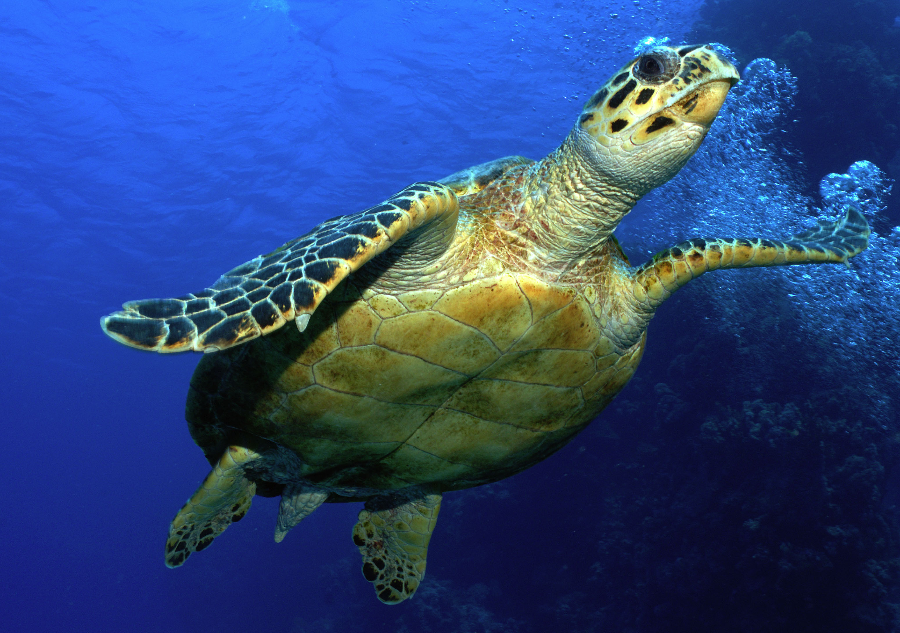

With 351 species of these reptiles they're split into 14 families.
These families each have their own description and identifiable features.
The first family group has the scienctific name of Carettochelyidae.
These turtles have large bodies and a nose that looks similar to that of a pig, giving them their more known name.
The second family group is the Chelidae.
These turtles have necks that are so long that they fold sideways under their shells. (How Odd!)
Our third family is the Cheloniidae.
These turtles are commonly known as sea turtles, they have adapted features for ocean life such as large flippers, and streamlined bodies.
The fourth family are the Chelydridae, or more known as snapping turtles.
These turtles are known for their aggression and their method of biting they use on their prey.
This fifth family are the Dermatemydidae.
Also known as river turtles, they mainly inhabit freshwater rivers, ponds, and streams.

This sixth family are Dermochelyidae. Also known as leatherback turtles.
They have large paddle-like flippers which have no claws, and the absence of scutes on their skins. (Don't look in their mouths!)
The seventh family are the Emydidae.
These are more pond dwellers and common pets because how easy they are to take care of.
Our eighth turtle family are the Geoemydidae.
Some of these turtles are highly aquatic, only showing up on land periodically to lay eggs. Other species are entirely land dwelling though.
The ninth family of turtles are the Kinosternidae.
Also knwon as mud or musk turtles, their name stems from the pungent musk they produce. They are rather tiny turtles as well.
This tenth family is the Pelomedusidae.
Similar to the second family, Chelidae, these turtles usually fold their necks sideways rather than pulling them back straight into the shells, they just dont have the long necks.
The eleventh family is the Platysternidae.
They are known as the big-headed turtle, these turtles have a head that is disproportionately large compared to their small bodies.
The twelfth family is the Podocnemididae.
These turtles have their pelvis attached to the shell preventing them from any pelvic motion but they look like the Platysternidae family.
This thirteenth family is surprising but they are the Testudinidae family
More commonly known as tortoises, they are exclusively land-dwelling. They are strictly herbivorous feeding mostly on weeds, grasses flowers, and fruits.

This last family are the Trionychidae.
They are soft shell turtles. They have shells that lack scutes making them very mobile in water.
Turtles are omnivores, the only turtle family that is strictly herbivores are tortoises. Turtles will eat insects such as mealworms and crickets. They also eat vegetables such as kale and water-plants. Sea turtles will eat algae, squid, and jellyfish. What a turtle eats depends on the environment it lives in.
| Location | Species # |
|---|---|
| North America | 40 species |
| South America | 310 species |
| Europe | 11 species |
| Asia | 5 species |
| Africa | 14 species |
| Australia | 6 species |
| Antarctica | zero |
- Sea turtle babies will hatch at night and look for the light of the moon as a guide to lead them to the water.
- The turtle shell is made of keratin, which is the same material that our fingernails are made of.
- The name for baby turtles is "sparkies".
- Just like your bones, a turtle's shell is actually part of its skeleton. It's made up of over 50 bones which include the turtle's rib cage and spine.
- Turtles belong to one of the oldest reptile groups in the world, topping gators, crocs, and even snakes
- Green sea turtles are unique among sea turtles in that they are primarily herbivores, eating mostly seagrasses and algae, giving them a greenish color.
- Leatherbacks are highly migratory, some swimming more than 10,000 miles a year.
- Even though they seem to stay underwater for huge amounts of time, turtles can definitely drown.
- The gender of turtles depends on the temperature.